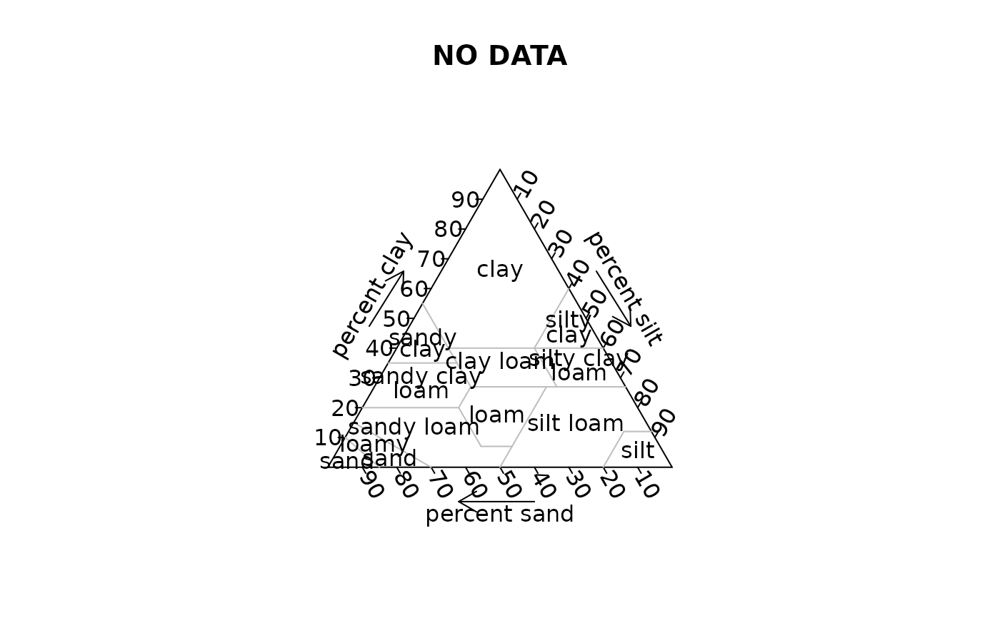
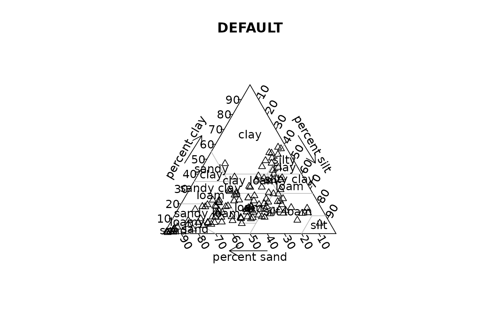
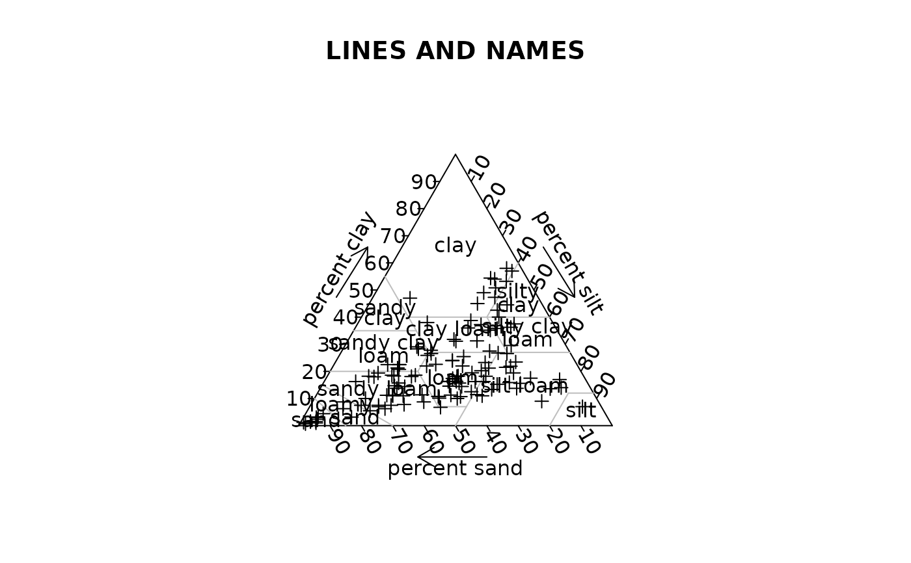

Soil texture triangle plot
soil.texture.RdDisplay a USDA soil texture triangle with optional grid, labels and soil texture points.
Usage
soil.texture(soiltexture=NULL, main="", at=seq(0.1, 0.9, by=0.1),
axis.labels=c("percent sand", "percent silt",
"percent clay"),
tick.labels=list(l=seq(10, 90, by=10), r=seq(10, 90, by=10),
b=seq(10, 90, by=10)),
show.names=TRUE, show.lines=TRUE, col.names="gray",
bg.names=par("bg"), show.grid=FALSE, col.axis="black",
col.lines="gray", col.grid="gray", lty.grid=3,
show.legend=FALSE, label.points=FALSE, point.labels=NULL,
col.symbols="black", pch=par("pch"), ...)Arguments
- soiltexture
Matrix of soil textures where each row is a soil sample and three columns contain the proportions of the components sand, silt and clay in the range 0 to 1 or percentages in the range 0 to 100.
- main
The title of the soil texture plot. Defaults to nothing.
- at
Positions on the three axes where ticks will be drawn.
- axis.labels
Labels for the axes.
- tick.labels
The tick labels for the three axes.
- show.names
Logical - whether to show the names of different soil types within the soil triangle.
- show.lines
Logical - whether to show the boundaries of the different soil types within the soil triangle.
- col.names
Color of the soil names. Defaults to gray.
- bg.names
Color to use when drawing a blank patch for the names of soil types.
- show.grid
Logical - whether to show grid lines at each 10 level of each soil component.
- col.axis
Color of the triangular axes, ticks and labels.
- col.lines
Color of the boundary lines. Defaults to gray.
- col.grid
Color of the grid lines. Defaults to gray.
- lty.grid
Type of line for the grid. Defaults to dashed.
- show.legend
Logical - whether to display a legend.
- label.points
Logical - whether to call thigmophobe.labels to label the points.
- point.labels
Optional labels for the points or legend.
- col.symbols
Color of the symbols representing each value.
- pch
Symbols to use in plotting values.
- ...
Additional arguments passed to triax.points and then points.
Details
soil.texture displays a triangular plot area on which soil textures defined as proportions of sand, silt and clay can be plotted. Optional grid, vertex labels, soil type divisions and names may also be displayed. If a matrix of soil textures is present, these will be plotted.
Value
If soiltexture was included, a list of the x,y
positions of the soil types plotted. If not, nil.
References
U.S. Department of Agriculture, Natural Resources Conservation Service, 2007. National Soil Survey Handbook, title 430-VI.// formerly https://www.nrcs.usda.gov/wps/portal/nrcs/detail/soils/survey/class/taxonomy/?cid=nrcs142p2_053577
U.S. Department of Agriculture, Natural Resources Conservation Service, 2007. Soil Texture Calculator// formerly https://www.nrcs.usda.gov/wps/portal/nrcs/detail/soils/survey/class/taxonomy/?cid=nrcs142p2_053577
Examples
data(soils)
soil.texture(main="NO DATA")

#> NULL
soil.texture(soils, main="DEFAULT", pch=2)

soil.texture(soils, main="LINES AND NAMES", show.lines=TRUE,
show.names=TRUE, pch=3)

soiltex.return<-soil.texture(soils[1:6,], main="GRID AND LEGEND",
show.grid=TRUE, pch=4, col.symbols=1:6, show.legend=TRUE)
 par(soiltex.return$oldpar)
#> named list()
par(soiltex.return$oldpar)
#> named list()